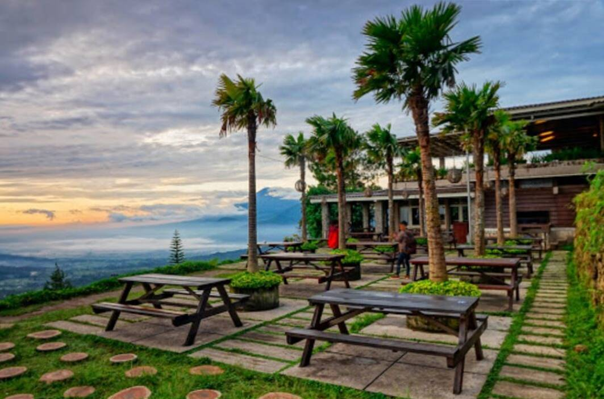
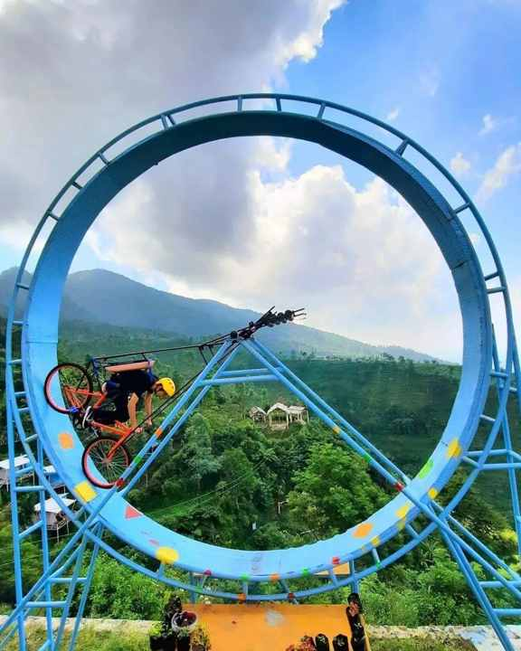

Sejarah Umbul Sidomukti
Umbul Sidomukti adalah sebuah kawasan wisata yang terletak di Bandungan, Kabupaten Semarang, Jawa Tengah. Destinasi ini dikenal dengan keindahan alamnya yang memukau, termasuk kolam pemandian alami dan berbagai fasilitas outdoor yang menyenangkan.

Daya Tarik Utama
Kawasan ini menawarkan pemandangan alam yang luar biasa dengan udara sejuk dan bersih. Anda dapat menikmati berbagai aktivitas outdoor seperti berenang di kolam pemandian alami, bersepeda, dan hiking. Umbul Sidomukti juga dikenal dengan fasilitas jembatan gantung dan area piknik yang menarik.
Aktivitas Wisata
Di Umbul Sidomukti, Anda bisa berenang di kolam pemandian alami, menjelajahi jalur hiking, atau hanya bersantai menikmati pemandangan alam. Tersedia juga area untuk piknik dan berfoto, serta beberapa restoran dan kafe untuk bersantap.
